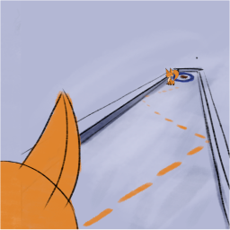
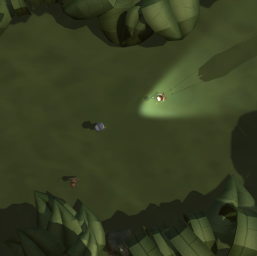
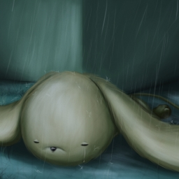
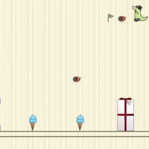
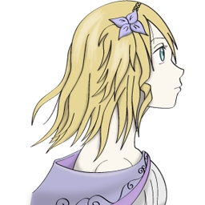

Projects that I've proudly helped developing

Curlingmon
Curlingmon is an in development mobile game based on
Curling with cute creatures and fun challenges. As the project is being developed in a very small
team I'm involved in basically everything, but my main focus is on writing the server part of the application
that will store player's information and serve as backend to the game.

Dark Woods
Dark Woods was my entry for
Ludum Dare #39. This project was developed in 48h by
an artist and me. We came up with the idea of the project and implemented everything from scratch
using
Unity3D as game engine.

Sleep Under The Rain
Sleep Under the Rain was a "gamejam" project for GDS that
Anne and me developed in 2016. We came up with the idea of trying to mix 2D platformer game mechanics
with a bit of storytelling. We had two months to develop the project from scract. We used
Unity3D as
game engine.

MatMate
MatMate was another learning project that
Anne and me developed. This one was much more focused in exploring simple 2D platformer mechanics
like wall jumping and conveyor belts. MatMate was developed using
libgdx

Yggdrasil
Yggdrasil was a learning project that
Anne and me develped back in 2012. We aimed to launching the game on the unfulfilling
OUYA platform. The project was developed using
libgdx.